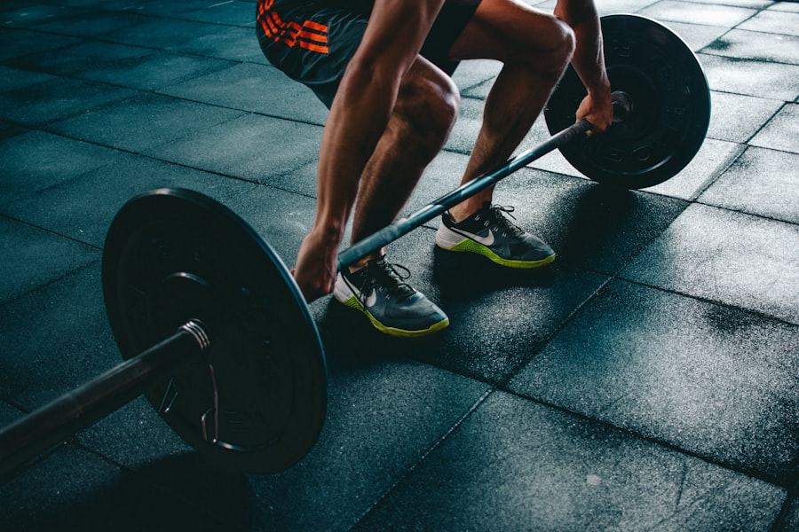

وزن زيت الزيتون
الزيت يجب أن يُوزن ويُحتسب ضمن سعراتك — كل 1 مل = 8 سعرات حرارية.
Important Info · تعليمات الخطة
قواعد بسيطة لكنها تصنع الفرق — التزم بها بدقة لتحقيق أفضل نتيجة في خسارة الدهون والحفاظ على العضل.

Trainee Profile · الملف التدريبي
The Rules · القواعد
الزيت يجب أن يُوزن ويُحتسب ضمن سعراتك — كل 1 مل = 8 سعرات حرارية.
احرص على تغطية احتياجك اليومي من البروتين للحفاظ على العضل وزيادة قوة البناء العضلي.
يمكنك ترحيل المتبقّي من الكارب والفات فقط لليوم التالي — أما البروتين فلا يُرحّل.
عدم تجاوز القدر المحدد من السعرات اليومية مهما كان السبب — الانضباط أساس النتيجة.
تستطيع إضافة الشوكولاتة بشرط إنقاص الكارب أو الفات: 30غ كارب = 100 سعرة و12غ فات = 100 سعرة.
تناول كمية كافية من الماء يومياً — أساسي للأداء والاستشفاء وتنظيم الشهية.
كل 7 أيام: انقص 500 سعرة قبلها أو بعدها، واجعل يومها قليل الكارب بإجمالي ≈ 2000 سعرة، واشرب ماءً كافياً.
لا تقِس وزنك في اليوم التالي للوجبة المفتوحة — الصوديوم العالي يسبب احتباس سوائل مؤقتاً.
القياس كل صباح على الريق بعد نوم 7–8 ساعات وبدون ملابس — قلة النوم تسبب احتباس السوائل.
دوّن وزنك كل يوم ثم خذ متوسط كل 7 أيام وقارنه — المعدل الصحي للنزول 0.5% من وزنك أسبوعياً.
قِس الخصر والصدر والرقبة والذراع والفخذ والأرداف أسبوعياً — لرصد الفرق عند ثبات الوزن.
لا مانع منها فهي لا تزيد الوزن، لكنها ليست صحية — قلّلها قدر الإمكان.
تُوزن البطاطس قبل الطبخ لاحتساب سعراتها بدقة، لأن الطبخ يغيّر وزنها.
ابدأ بـ 20 دقيقة ونبض القلب فوق 125؛ وعند ثبات الوزن ارفع المجهود 10 دقائق إضافية وراقب.
Golden Tip · نصيحة ذهبية
حاول دائماً أثناء التمرين أن تصل إلى الفشل العضلي أو ما قبله بقليل — هذا ما يحفّز النمو الحقيقي للعضلة.
▶ شرح الطريقة بالفيديو